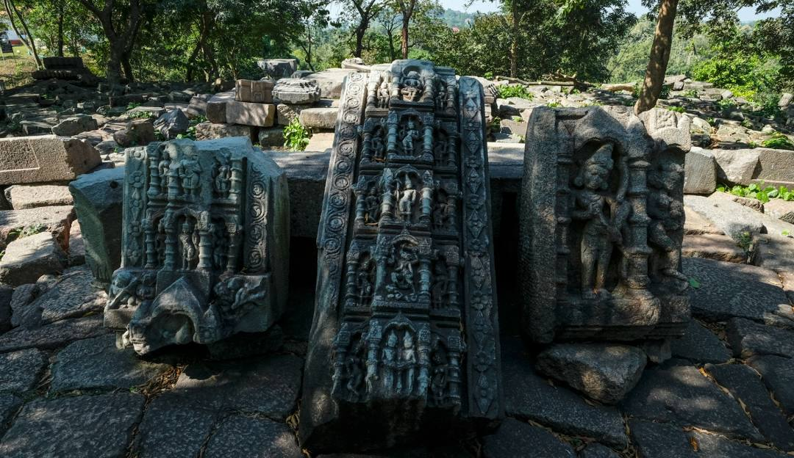
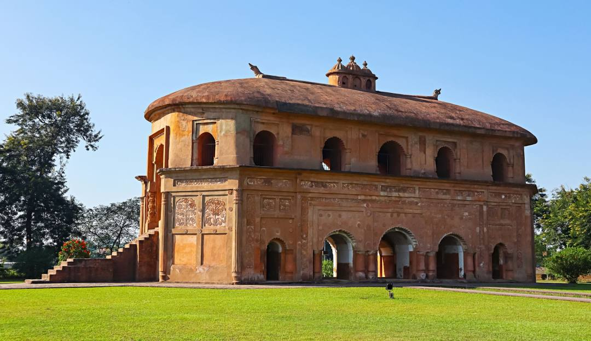
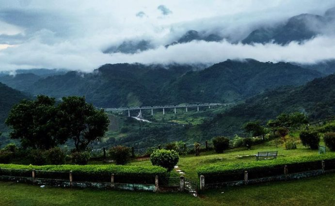

Welcome to Arunachal Pradesh
Arunachal Pradesh, also known as the "Land of the Rising Sun," is a mesmerizing state in Northeast India, renowned for its majestic mountains, serene valleys, and rich tribal culture.

Tezpur
A historic town by the Brahmaputra with scenic beauty.

Majuli Island
World’s largest river island with vibrant Assamese culture.

Kamakhya Temple
Sacred Shakti Peetha atop Guwahati’s Nilachal Hill.

Sivasagar
Historic Ahom capital with temples and royal monuments.

Manas National Park
UNESCO site with tigers, elephants, and lush forests.

Haflong
Assam’s only hill station, peaceful and picturesque retreat.